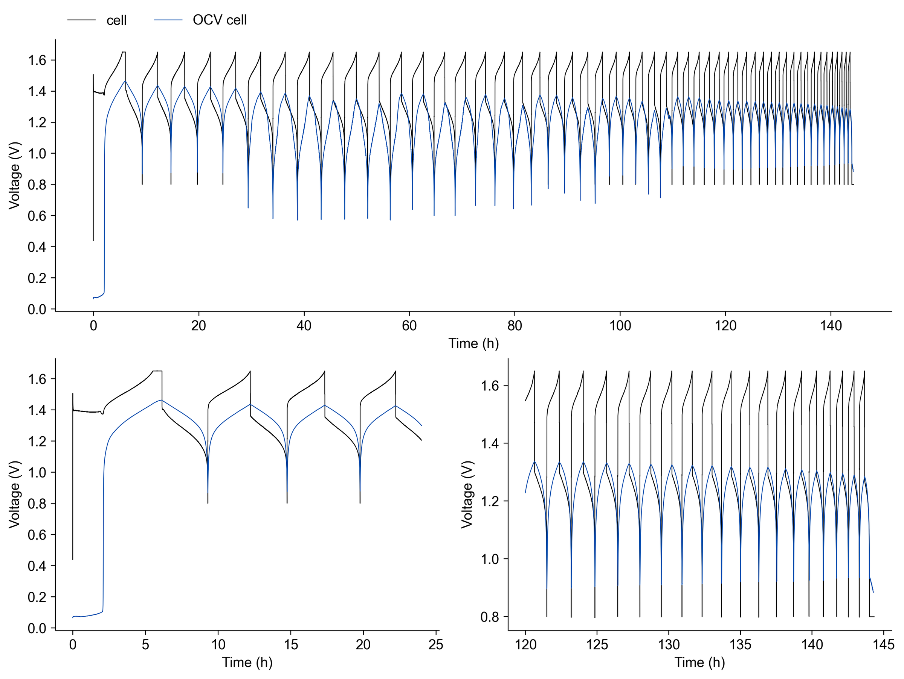
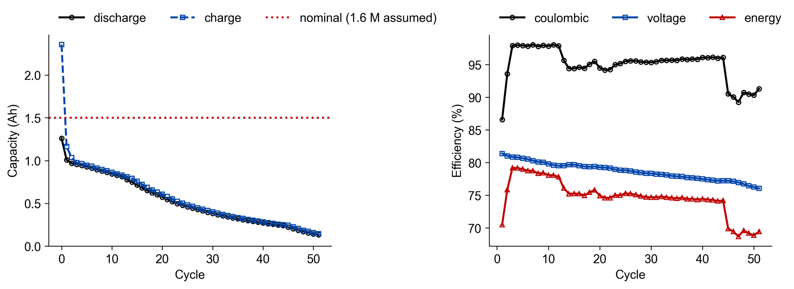
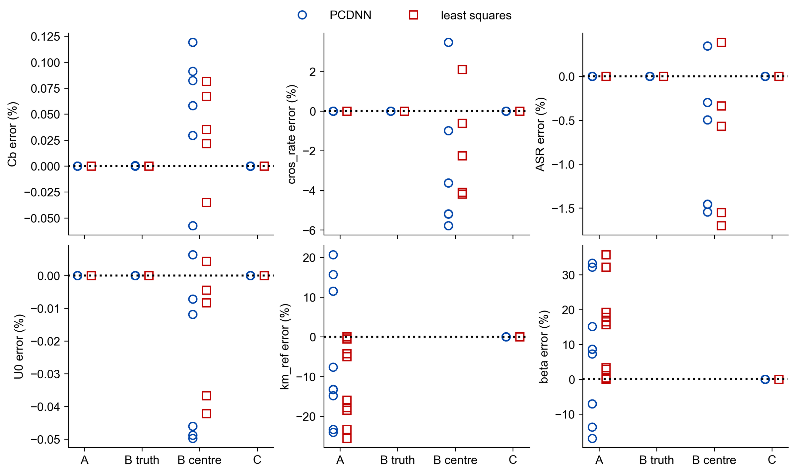
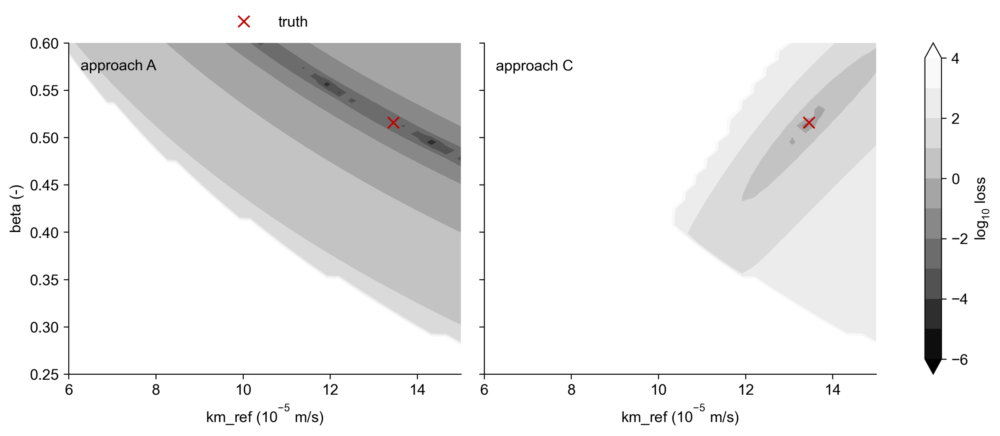
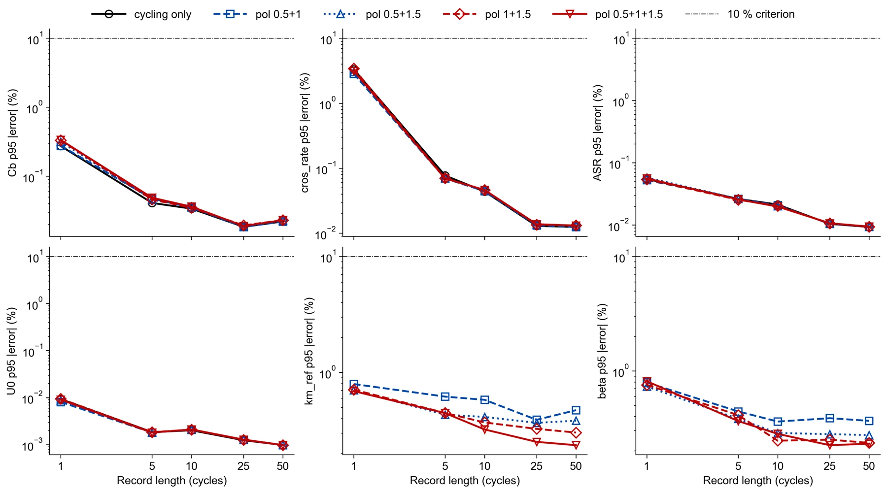
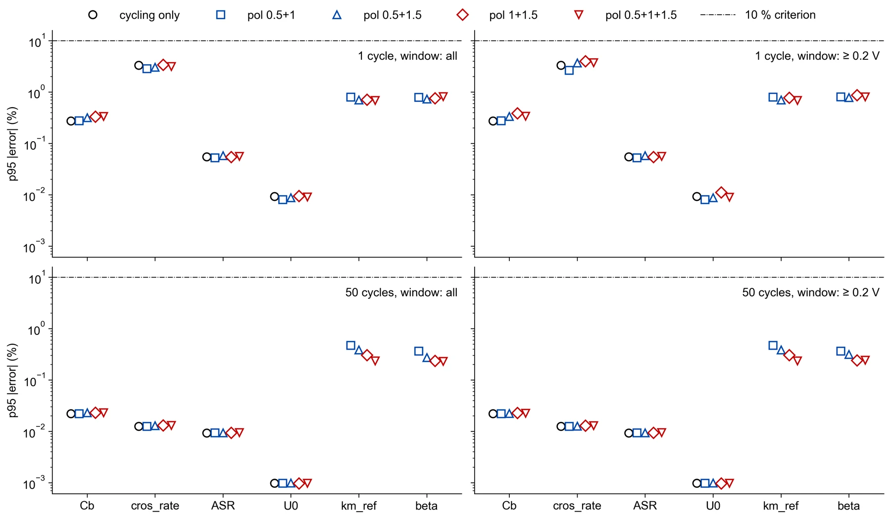
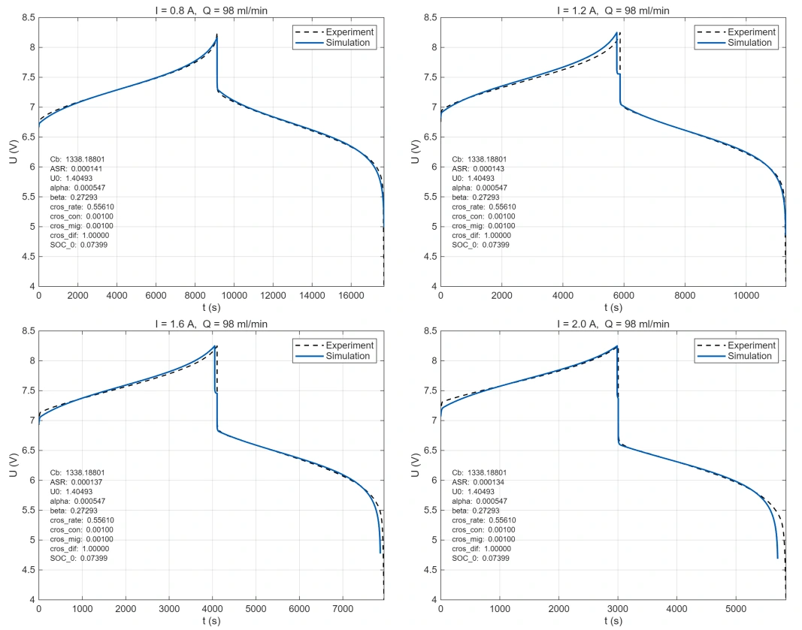
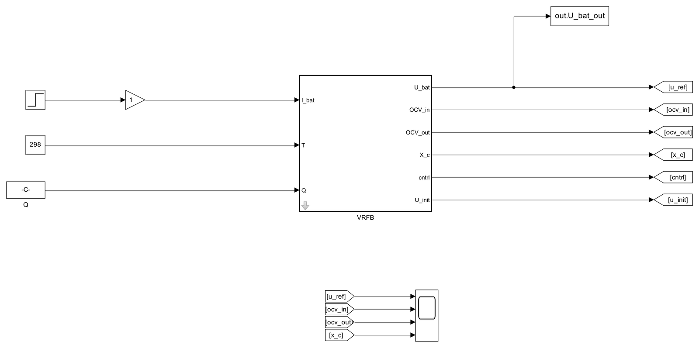

Research / Main study
Flow-battery modelling
and diagnostics.
Identifying physical model parameters from battery measurements, and testing what those parameters can tell us about degradation.
Membrane comparison · First run analysed
The Nafion-117 run.
The controlled three-membrane comparison is underway. The first cycling run, with Nafion 117, is complete and its initial analysis is available. Asahi (40 µm) and fumasep FAPQ-375-PP are the remaining planned membranes. The aim is to connect changes in measured performance with the physical parameters of the battery model.
The Nafion-117 record uses a 4 cm² single cell at 0.4 A (100 mA/cm²), with 35 mL of electrolyte per tank. After an initial conditioning cycle, constant-current cycling between 1.65 and 0.80 V uses 30-second rests. The cell-voltage and separate OCV-cell channels cover about 144 hours. This first record contains no polarisation curves.
Discharge capacity fell from 1.009 Ah in loop cycle 1 to 0.132 Ah in cycle 51: about 87 % loss. Coulombic efficiency shows distinct drops at cycles 13 and 45, while voltage efficiency declines more smoothly from 81.4 to 76.1 %. The voltage and OCV traces provide additional evidence for investigating the loss.
These are observations from the first membrane run, not a completed comparison or an identified degradation mechanism. Across 300 tested parameter sets, the current 0D model produced at most about 56 % capacity loss on this protocol. The observed loss therefore remains unexplained within the tested model and ranges; attributing it to membrane crossover would be premature.




Controlled synthetic test
Does a neural fit
recover the physics?
I also adapted the physics-constrained deep neural network (PCDNN) method to our 0D model and compared it with least squares from the same two starting points. Five known parameter sets generate noise-free cycles: training at 50 and 100 mA/cm², with testing at 75 and 150 mA/cm². The neural networks return model parameters as functions of current density; the physical model calculates the voltages.
Both methods recover capacity (Cb), crossover rate (cros_rate), resistance (ASR) and formal potential (U0) accurately. Without polarisation curves, the two mass-transport parameters (km_ref and beta) can compensate for each other: errors reach about 36 % despite an almost exact voltage fit. Fixing them at incorrect values biases the crossover estimate by up to about 6 % at the training currents.
Adding polarisation curves resolves that ambiguity in these tests. Least squares and the L-BFGS-only PCDNN recover all six parameters across all five sets; the latter's errors remain below 0.004 %. Least squares is substantially faster. This controlled test establishes no neural-network advantage or validation on experimental data.
Method reference: He, Stinis and Tartakovsky, Physics-constrained deep neural network method for estimating parameters in a redox flow battery.




Earlier simulations: designing an identifiable experiment
Main study in simulation
Can the plan identify
each parameter?
In the initial protocol-design study, I generated synthetic records with known parameters from the same zero-dimensional model: a 50-cycle constant-current record with the cell voltage and the voltage of an OCV cell, plus polarisation curves at several flow rates. I fitted them with multistart least squares to check which parameters could be recovered and how many cycles were needed.
The six parameters are capacity (Cb), crossover rate (cros_rate), resistance (ASR), formal potential (U0) and two mass-transport parameters (km_ref and beta). Under idealised conditions (the same model, simple noise, constant parameters), cycling with the OCV signal fixes the first four. The two mass-transport parameters cannot be separated by cycling alone. With polarisation curves at two flow rates added, all six came back within 10 % in every simulated case. Most of the information on constant parameters arrives within the first 5–10 cycles.
These results describe the idealised simulated protocol, including polarisation curves, rather than the first Nafion-117 record. They do not establish transfer to measured data or recovery under model error, correlated noise or changing parameters.




Model foundations and cell design
Foundation · Year 1
A model that meets
the measurements.
In the first year of my MSc, I built a zero-dimensional flow-battery model in Simulink using the laboratory’s established physics. The model tracks electrolyte concentrations and stack voltage, can start from state of charge or measured voltage, and includes charge and discharge protection.
I fitted it to six polarisation curves and four laboratory charge–discharge cycles using a two-stage identification method adapted from the lab’s published work. A shared physical parameter set reproduced the four cycles with a mean voltage RMSE of 0.065 V in Simulink; area-specific resistance was retuned for each current. As an independent check, the fitted formal potential lands within 4 mV of the directly measured open-circuit voltage, and the fitted initial state of charge matches a Nernst estimate.
The next question was identifiability. Repeating the fit from different starting points showed that a good voltage fit does not uniquely determine every physical parameter. Formal potential, resistance, and concentration can compensate for one another.
Scope: one five-cell stack and one experimental campaign. The voltage error describes the fitted laboratory cycles; it is not a general battery-accuracy guarantee.

Model structure



Cell design · Current experiments
From CAD
to the cell.
For the current experiments we use new single cells. I use Autodesk Fusion for 3D CAD and assembly modelling of these vanadium flow-battery cells.
The Fusion assembly and the corresponding physical cell show the link between CAD and the laboratory hardware: layered cell components, end plates, fasteners, and electrolyte connections.


Reports and earlier manuscript work
Writing
Reports & work in progress.
My writing includes a first-year research report, a completed course-project report, and a manuscript draft from an earlier direction of the thesis. The draft has not been submitted or peer reviewed.
A digital twin for a vanadium redox flow battery: Simulink model, protection logic and parameter identification on a five-cell stack. Research report.
Identifying Cycle-by-Cycle Crossover Drift in a Vanadium Redox Flow Battery: State Resets and Neural Parameter Functions. Earlier direction, on crossover drift; not submitted.
Instrumentation
Measuring beyond
the cell voltage.
I built an independent OCV and colour reader for the laboratory setups. Its design, voltage checks and enclosure build are documented as a separate project.
Explore the reader projectProgress
Where things stand.
First membrane record analysed
The Nafion-117 run shows about 87 % capacity loss across the recorded loop cycles. The tested model does not explain the full loss; its cause remains under investigation.
Controlled synthetic comparison
Compared PCDNN and least squares on five noise-free parameter sets. Polarisation curves resolve the two mass-transport parameters; no neural advantage is established.
Testing the experimental plan
Used known-truth simulations to check which model parameters cycling and polarisation measurements could identify.
Next: investigate the electrolyte, OCV and cell-condition evidence, and continue the remaining membrane runs.